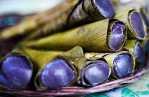
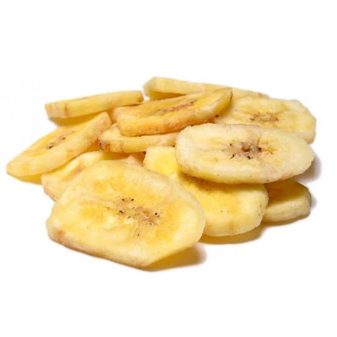
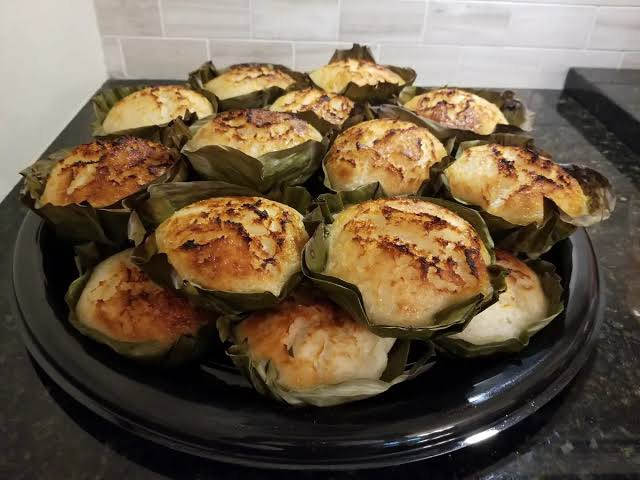
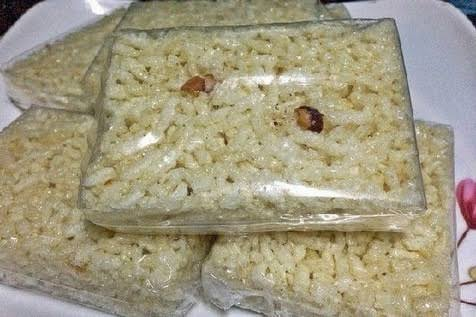
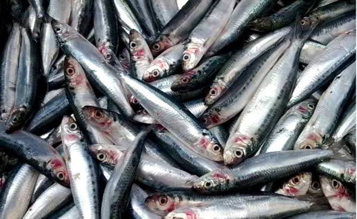

SAYONGSONG
Sayongsong is a traditional Filipino steamed rice cake from Surigao del Norte and other areas of the Caraga Region of northeastern Mindanao, as well as the southeastern Visayas (Bohol, Samar, Leyte) where it is known as sarungsong or alisuso. It is distinctively served in cone-shaped banana leaves.
BANANA CHIPS
Banana chips in the Philippines are made predominantly from saba or cardava bananas, with the latter preferred for commercial banana chips due to their larger sizes. For domestic production and home cooking, they are made directly by deep-frying fresh sliced bananas.
BIBINGKA
Bibingka is a Filipino rice cake made with ground rice, coconut milk, and sugar. It is traditionally cooked in a terracotta oven lined with banana leaves, but it can also be cooked in a conventional oven. Bibingka is often served during the Christmas season, but it can be enjoyed year-round.
AMPAO
Ampao food is a traditional Filipino dish made with ground rice, coconut milk, sugar, and sesame seeds. It is usually cooked in a banana leaf-lined mold and steamed until cooked through. Ampao food is often served as a snack or dessert, and it is especially popular during the holidays.
TAMBAN FISH
The local name "tamban", however, is applied to Bali sardinella S. lemuru and at least 8 other sardine species: to include five Sardinella spp. White sardinella, S. albella. There are many tamban always in Brgy.Panhutungan ,Placer Surigao del Norte, the people in the said barangay always caught tamban everyday.